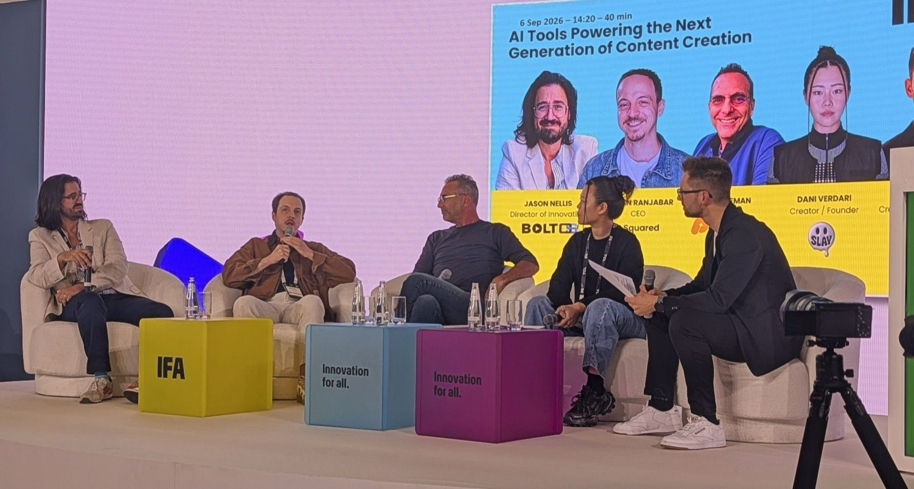
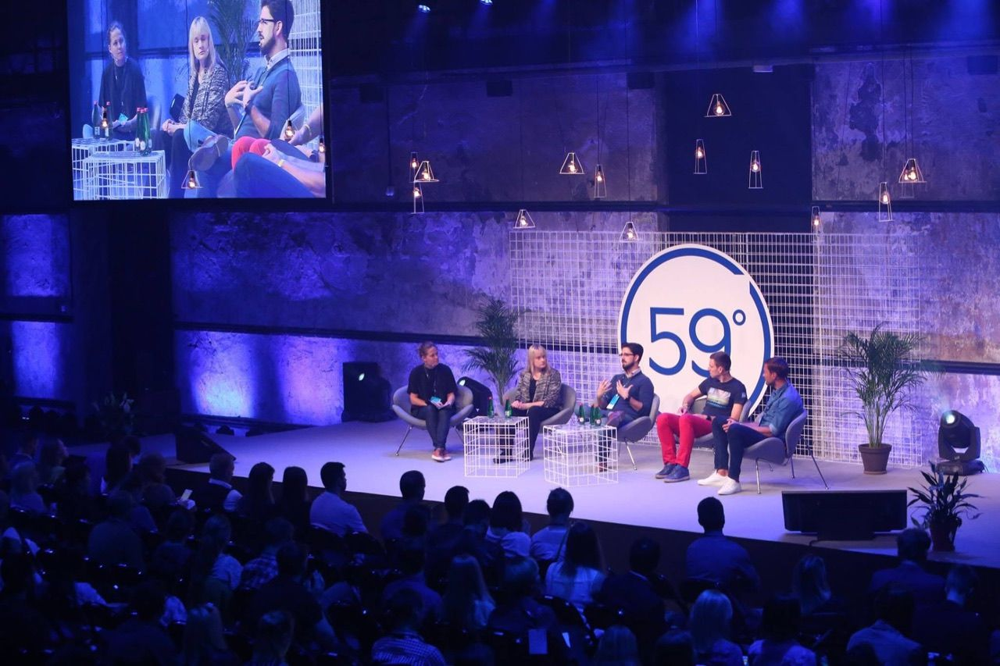
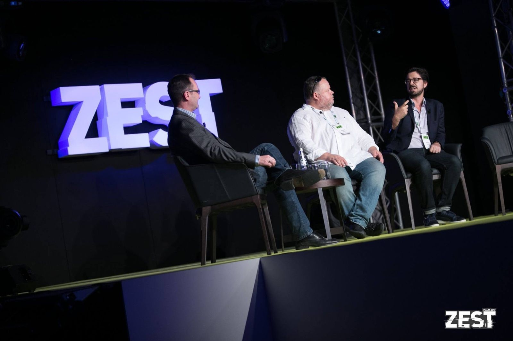

I speak from inside
the things I built.
I've been in the creator economy long enough to watch it rename itself twice: streaming at Hulu, social commerce at a company Facebook bought, now AI and creator IP. Every talk comes from something I built, sold or had to fix.



Building in media and the creator economy since 2008. Guest lectures at Northwestern, Howard and Georgetown.
Pick a talk. I'll bring the rest.
Three talks I can give tomorrow, shaped to your room and your run of show.
Your AI strategy is probably theater
Most organizations have an AI strategy that's really a press release.
Keynote, 45 to 60 minutes. For executive teams, product leaders, and AI or innovation conferences.
The media cycle no one believes is a cycle
Every wave looks like a revolution from the inside, until you've lived through three of them.
Keynote, 45 to 60 minutes. For media and technology executives, strategy teams, and industry conferences.
Why some creators break through and most don't
After 100+ Building Value conversations, the same few patterns keep showing up.
Keynote, 45 to 60 minutes. For creator platforms, brand and marketing teams, and creator conferences.
Also on request
- Fandom is infrastructureWhat it takes to build fandom on purpose, and what comes after the influencer era.
- What it's like to sell the thing you builtPackagd from zero to the Meta acquisition, seen from the acquired side, and what handing your work to someone else teaches you about the next thing.
- Leading from a different time zoneWhat I've learned leading US companies and global teams from the south of France, including what quietly breaks across a nine-hour gap.
Watch me host.
A reel from the creator interviews I hosted on Meta's Super, and two Building Value episodes.
Hosting on Super, 2022
Creator interviews I hosted live on Super, the platform I built and launched at Meta.
The TikTok Magic of a Former McDonald's Chef! [Chef Mike Haracz]
A former McDonald's corporate chef on building a TikTok following from scratch, and how a personal voice can outperform a marketing budget.
Hulu's First PM [Betina Chan-Martin]
Hulu's first product manager on building a streaming product from zero, and which early-team lessons don't survive scale.
How I show up.
The best panel in the program is usually the one someone ran properly.
Most panels fail the same way: four smart people take turns giving prepared answers and nobody disagrees out loud. I've hosted 150+ recorded conversations, including 50-plus VidCon interviews on Meta's Super and 100-plus episodes of Building Value, plus internal Meta events up to the Games Day broadcast. When I've done the job well, the room remembers the panelists.
If you've got a session that matters and nobody obvious to hold it, that's the one to call me about.
Hosting Austin Evans and team, 2017
Favorite Tech
A multi-guest segment with one of tech's biggest YouTubers and his team, keeping four people moving, funny and on point.
Rapid Fire Q&A
Quick questions, real answers, and a room that stays with you.
Tell me about your event.
Tell me who's in the audience and what you want them walking out believing, and I'll tell you fast whether I'm the right fit. I live twenty minutes from the Palais des Festivals, so MIPCOM, MIPTV and Cannes Lions are local. For the rest of Europe and North America, I travel.